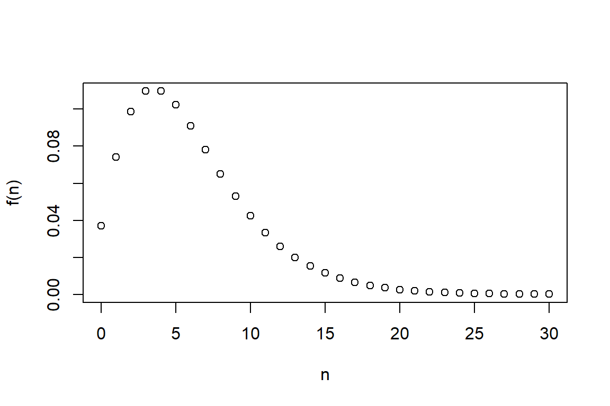

- Preface
- 1 Introduction to Loss Data Analytics
- 2 Frequency Distributions
- 3 Modeling Loss Severities
- 4 Model Selection
- 5 Simulation
- 6 Aggregate Claim Simulation
- 7 FreqSev
- 8 Tweedie
- 8.1 Tweedie distribution
- 8.1.1 Load Tweedie Package
- 8.1.2 Set Paramteres for Tweedie(p,mu,phi)
- 8.1.3 Set Sample Size
- 8.1.4 Show Summary Statistics
- 8.1.5 Show Histogram
- 8.1.6 QQ Plots for Different p Values
- 8.1.7 Fit Tweedie Distribution
- 8.1.8 Show Parameter Estimates
- 8.1.9 Maximum Likelihood Estimation
- 8.1.10 Obtain Standard Error
- 8.1 Tweedie distribution
- 9 Bootstrap Estimation
2.1 Basic Distributions
2.1.1 Poisson Distribution
This sections shows how to compute and graph probability mass and distribution function for the Poisson distribution.
2.1.1.1 Probability Mass Function (pmf)
lambda <- 3
N<- seq(0,20, 1)
#get the probability mass function using "dpois"
(fn <- dpois(N, lambda)) [1] 4.978707e-02 1.493612e-01 2.240418e-01 2.240418e-01 1.680314e-01
[6] 1.008188e-01 5.040941e-02 2.160403e-02 8.101512e-03 2.700504e-03
[11] 8.101512e-04 2.209503e-04 5.523758e-05 1.274713e-05 2.731529e-06
[16] 5.463057e-07 1.024323e-07 1.807629e-08 3.012715e-09 4.756919e-10
[21] 7.135379e-11# visualize the probability mass function
plot(N,fn,xlab="n",ylab="f(n)") 
A few quick notes on these commands.
<-seqis short-hand for sequencedpoisis a built-in command in R for generating the “density” (actually the mass) function of the Poisson distribution. Use the online help (help("dpois")) to learn more about this function.- The open paren
(, close paren)tells R to display the output of a calculation to the screen. plotis a very handy command for displaying results graphically
2.1.1.2 (Cumulative) Probability Distribution Function (cdf)
#get the cumulative distribution function using "ppois"
(Fn <- ppois(N, lambda) ) [1] 0.04978707 0.19914827 0.42319008 0.64723189 0.81526324 0.91608206
[7] 0.96649146 0.98809550 0.99619701 0.99889751 0.99970766 0.99992861
[13] 0.99998385 0.99999660 0.99999933 0.99999988 0.99999998 1.00000000
[19] 1.00000000 1.00000000 1.00000000# visualize the cumulative distribution function
plot(N,Fn,xlab="n",ylab="F(n)") # cdf
2.1.2 Negative Binomial Distribution
This section shows how to compute and graph probability mass and distribution function for the Poisson distribution. You will also learn how to plot two functions on the same graph.
2.1.2.1 Probability Mass Function (pmf)
alpha<- 3
theta<- 2
prob<-1/(1+theta)
N<- seq(0,30, 1)
#get the probability mass function using "dnbinom"
(fn <- dnbinom(N, alpha,prob) ) [1] 3.703704e-02 7.407407e-02 9.876543e-02 1.097394e-01 1.097394e-01
[6] 1.024234e-01 9.104303e-02 7.803688e-02 6.503074e-02 5.298801e-02
[11] 4.239041e-02 3.339850e-02 2.597661e-02 1.998201e-02 1.522439e-02
[16] 1.150287e-02 8.627153e-03 6.428075e-03 4.761537e-03 3.508501e-03
[21] 2.572901e-03 1.878626e-03 1.366273e-03 9.900532e-04 7.150384e-04
[26] 5.148277e-04 3.696199e-04 2.646661e-04 1.890472e-04 1.347233e-04
[31] 9.580323e-05# visualize the probability mass function
plot(N,fn,xlab="n",ylab="f(n)") # pmf
2.1.2.2 (Cumulative) Probability Distribution Function (cdf)
#get the distribution function using "pnbinom"
(Fn <- pnbinom(N, alpha,prob)) [1] 0.03703704 0.11111111 0.20987654 0.31961591 0.42935528 0.53177869
[7] 0.62282172 0.70085861 0.76588935 0.81887735 0.86126776 0.89466626
[13] 0.92064288 0.94062489 0.95584927 0.96735214 0.97597930 0.98240737
[19] 0.98716891 0.99067741 0.99325031 0.99512894 0.99649521 0.99748526
[25] 0.99820030 0.99871513 0.99908475 0.99934942 0.99953846 0.99967319
[31] 0.99976899plot(N,Fn,xlab="n",ylab="F(n)") # cdf
#Plot Different Negative Binomial Distributions on the same Figure
alpha1 <- 3
alpha2 <- 5
theta <- 2; prob <- 1/(1+theta)
fn1 <- dnbinom(N, alpha1,prob)
fn2 <- dnbinom(N, alpha2,prob)
plot(N,fn1,xlab="n", ylab="f(n)")
lines(N,fn2, col="red", type="p")
A couple notes on these commands.
- You can enter more than one command on a line; separate them using the
;semi-colon linesis very handy for superimposing one graph on another.- When making complex graphs with more than one function, consider using different colors. The
col="red"tells R to use the color red when plotting symbols.
2.1.3 Binomial Distribution
This section shows how to compute and graph probability mass and distribution function for the binomial distribution.
size<- 30
prob<- 0.6
N<- seq(0,30, 1)
fn <- dbinom(N,size ,prob)
plot(N,fn,xlab="n",ylab="f(n)") # pdf
fn2 <- dbinom(N,size ,0.7)
lines(N,fn2, col="red", type="p")